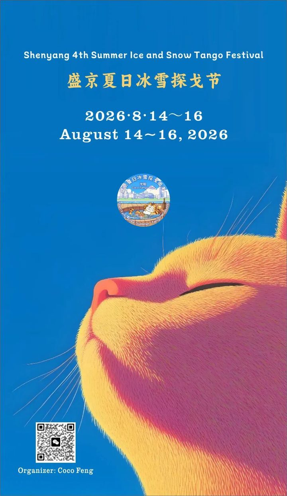
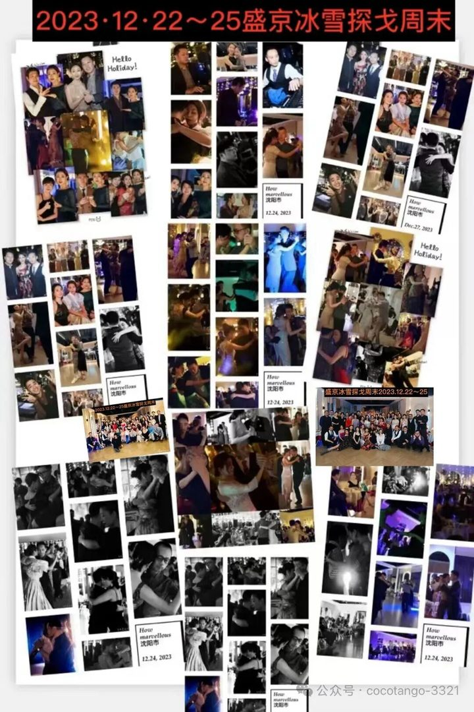
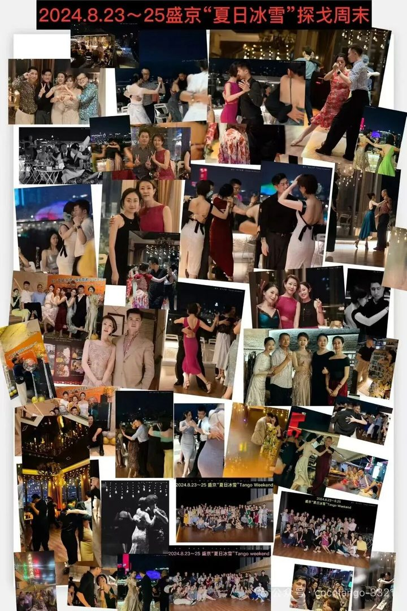
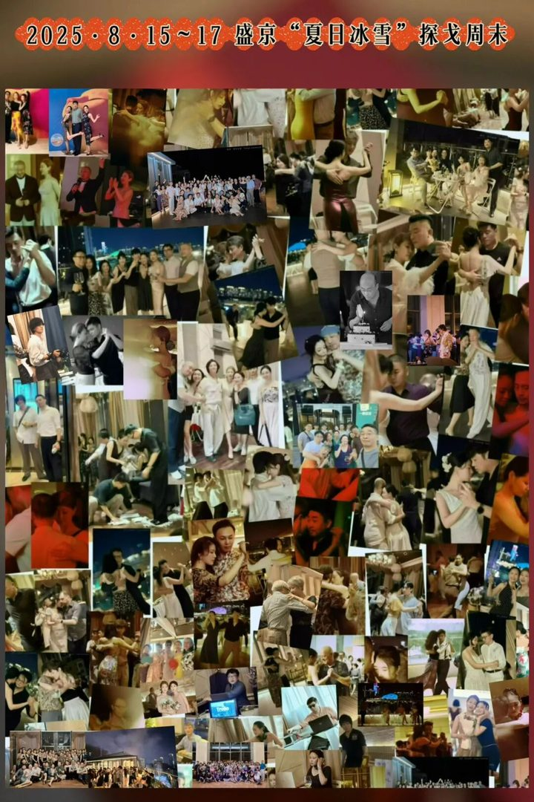

While much of China is still sweltering in August, Shenyang, at 41° north, already feels the first cool breezes after the start of autumn. It is a city where you can dance through breezy August evenings. Known in the past as Shengjing and Fengtian, Shenyang was the birthplace of the Qing dynasty and became its capital in 1625.
The Shenyang Palace Museum is the only imperial palace complex outside the Great Wall. Nearby, the Fuling (East) and Zhaoling (North) Tombs hold the Qing founding emperors; Zhaoling is the tomb of Emperor Huang Taiji. The Zhang Residence (Marshal Zhang's Mansion), a blend of Chinese and Western architecture, tells the story of the Republican era. The Liaoning Provincial Museum, the first museum founded in the People's Republic of China, is a good place to spend a day. At dusk, walk along the Hun River.
Shenyang is the "city of chicken racks": fried, grilled, smoked, stewed or stir-fried. There is even a "Chicken Rack Museum" at the Xihongshi night market in Tiexi District. Evenings are for skewers and cold beer. On the century-old Xita Street, Korean barbecue meets northeastern clay-stove grilling. Don't miss guobaorou (crispy sweet-and-sour pork), iron-pot stew, Laobian dumplings, Majia shaomai, and frozen pears, which you can now get in summer too.
"For bathhouses in China, look to the northeast; for the northeast, look to Shenyang." The city has more than a thousand bathhouses, and a visit can fill half a day: scrubbing, saunas, massage, food, reading rooms and more.
Thu, Aug 13 · 20:00–24:00, after the city tour. Followed by an after-party with late-night barbecue skewers.
Fri–Sun, Aug 14–16 · 19:10–20:20, and Mon, Aug 17 · 18:00. Each person pays their own share (AA). Dinners are optional; sign up in advance. Expect Liaoning specialties such as guobaorou.
Mon, Aug 17. A 15,000 m² Japanese-style onsen and bathhouse, connected directly to the venue hotel's ground-floor lobby. You can spend the whole day there. Pay as you go with your wristband.
Mon, Aug 17 · 20:00–24:00, followed by an after-party.


